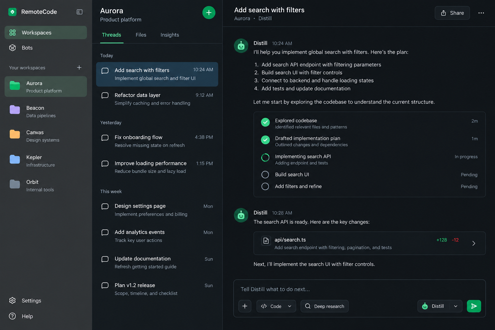
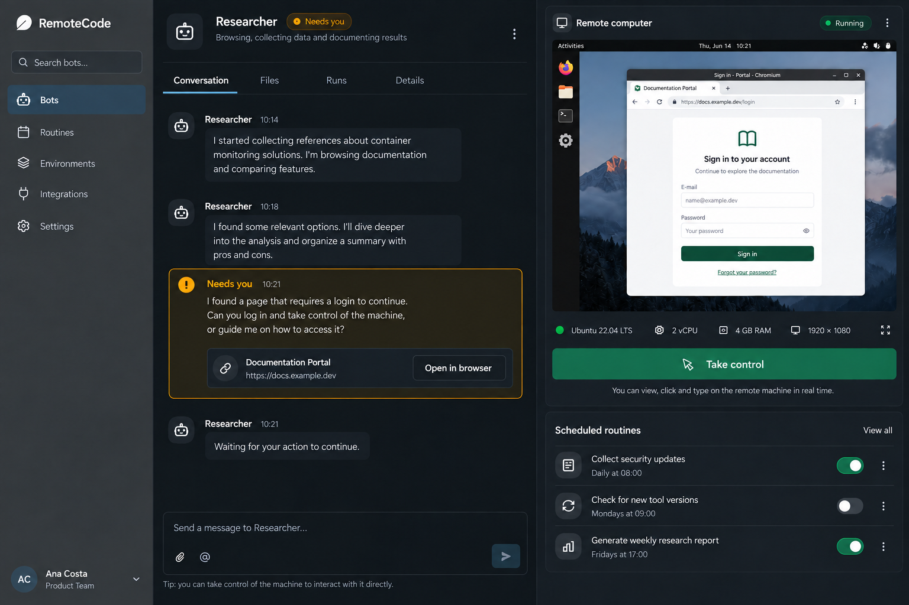
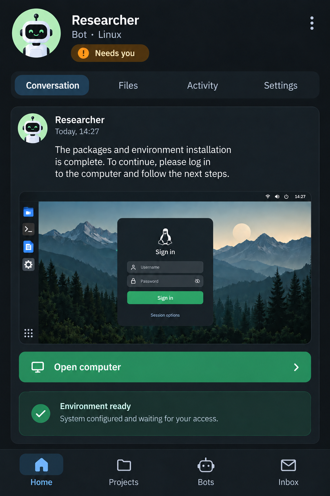

Visual study · desktop and mobile
One Linux machine. All screens to work from anywhere.
Explore the main screens of RemoteCode. The desktop shows the React Native Web interface; the mobile has its own navigation. Workspaces, Bots, files, agents, and routines belong to the user’s container.

WorkspaceThree columns, context, and conversation with Distill

Human interventionThe same Linux session alongside the thread

MobileUrgent conversation and action at your thumb's reach
Navigable gallery
Choose the screen and device.
The mockups below are HTML/CSS with editable text. The three images above are AI-generated visual concepts that help explore the aesthetic direction.
Overview
Machine summary, work in progress, and pending actions.
Where the action happens
Important behavior